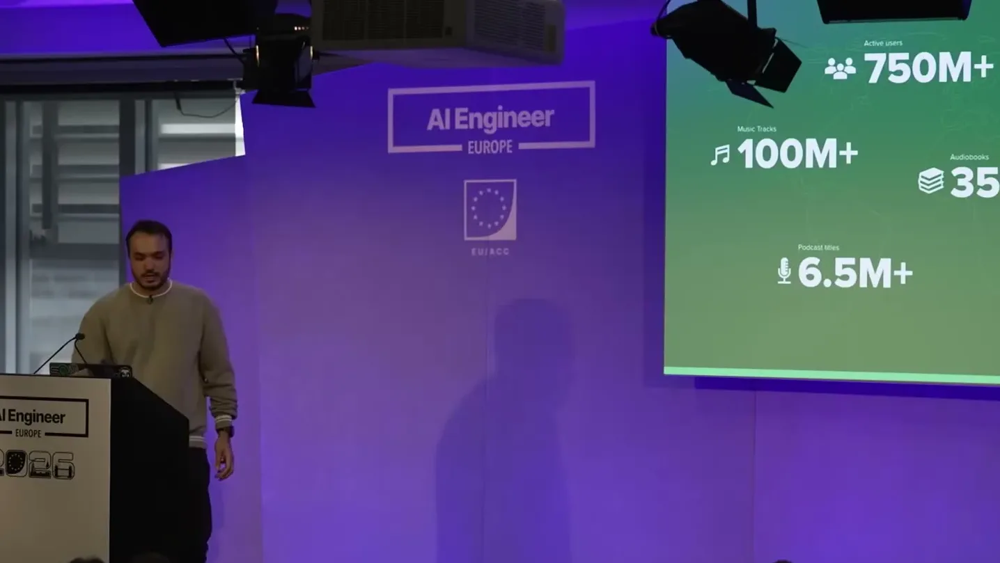
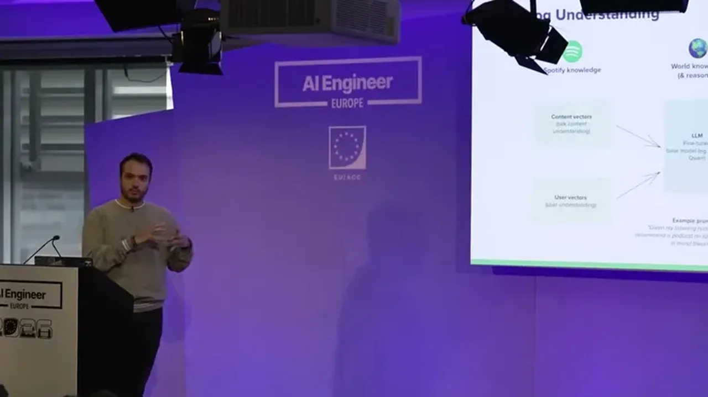
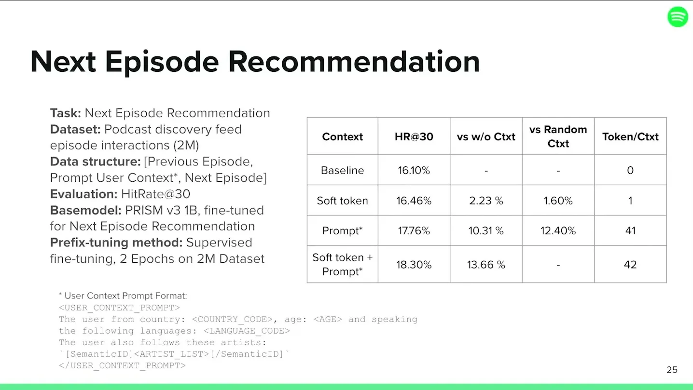
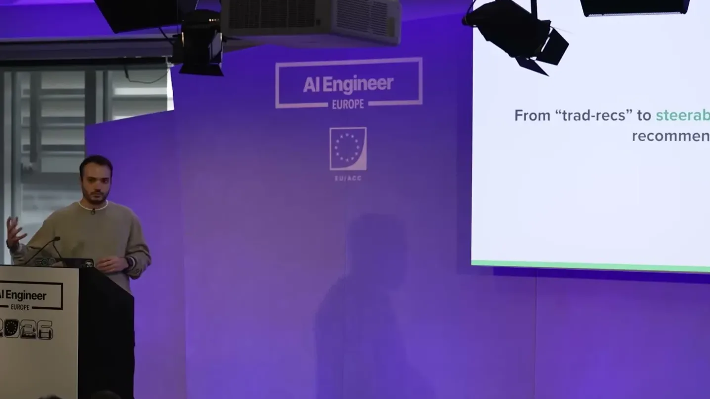
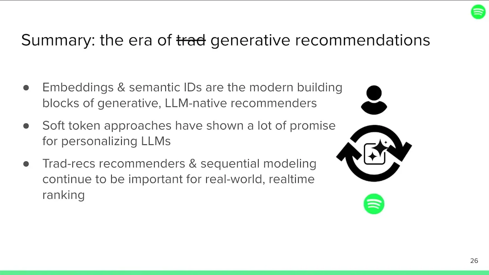

Personalization in the Era of LLMs
Spotify replaces siloed rankers with a single LLM-backbone recommender combining user embeddings, hierarchical semantic-ID tokens, and per-user soft tokens plus an editable taste profile.
If you only read one thing
- Spotify is replacing per-product siloed ranking models with a single LLM-backbone generative recommender that unifies user embeddings, tokenized catalog items, and steerable prompts.
- Catalog items are compressed into 4-6 hierarchical 'semantic ID' tokens (shared prefix tokens for similar artists) so a fine-tuned open-weight LLM can auto-regressively predict the next track or episode.
- Because the model can't be trained on every one of Spotify's 750 million-plus users, a per-user embedding is projected into the LLM's token space as a 'soft token,' and users can directly edit their exposed 'taste profile' text.
This traces how Spotify's single LLM backbone stands in for what used to be separate per-surface rankers, stitching together catalog tokens and a per-user soft token (ours). The feedback edge from taste profile back to the model is our inference from the talk's description of direct editing, not a stated data path (ours).
Why this talk is a blueprint, not a take (ours)
Scope: A large-scale, cross-surface personalization system at one consumer platform (Spotify, ~750M MAUs, 100M+ tracks), covering user modeling and catalog tokenization feeding a shared LLM backbone; not a description of any single product feature's user-facing rollout beyond taste profile and next-episode recommendations.
A pipeline that replaces per-surface ranking models with one LLM backbone: a daily-refreshed user embedding projected into the model's token space as a soft token, and catalog items compressed into 4-6 hierarchical semantic-ID tokens so the model can auto-regressively predict the next track or episode. The next-episode version of this is already in production, and a user-editable taste profile lets people directly correct what the model believes about them.
Prerequisites the talk implies:
- An existing user-embedding pipeline capable of generating and refreshing vectors for the entire user base daily
- A tokenization scheme (semantic IDs or equivalent) for the content catalog, plus enough catalog metadata to train it
- An open-weight LLM you are willing to continually fine-tune on your own domain data, accepting some catastrophic-forgetting risk
- A collaborative-filtering fallback or equivalent, since the model cannot be individually trained on every user
What the talk does not say:
- No cost, latency, or serving-infrastructure figures for running an LLM backbone across all recommendation surfaces at Spotify's scale
- No number for how much catastrophic forgetting actually degrades the model, only that it is 'an issue'
- No detail on how the soft-token projection is trained or how often user embeddings need to be refreshed to stay accurate
- No rollout numbers for taste profile beyond 'a few markets,' and no measured user satisfaction or retention impact from the feature
If you were to replicate one thing first: Build a tokenization scheme for your own catalog (a semantic-ID style compression of item vectors into a handful of hierarchical tokens) before attempting any soft-token user personalization, since the LLM needs catalog items it can predict as tokens first.
| Component | What it does (from the talk) | Evidence | Slide |
|---|---|---|---|
| User embedding pipeline | Generates a vector per user from their listening history every day, foundation for all downstream personalization, generation, and search | c2 · 07:13 |  |
| Content vector / tokenizer | Encodes each track or episode into a roughly thousand-dimensional content vector, then tokenizes it | c5 · 13:25 |  |
| Semantic ID scheme | Compresses a content vector into 4-6 hierarchical tokens (shared prefix tokens for similar artists), letting an LLM auto-regressively predict the next item as just another token | c4 · 12:55 | |
| Fine-tuned open-weight LLM backbone | Continually trained/fine-tuned model (e.g. Llama, Qwen) that combines Spotify catalog knowledge with the model's own world knowledge for steerability and explainability | c7 · 12:25 | |
| Vector projection / soft token | Projects a user's embedding into the LLM's token space so a single soft token represents that user's taste inside the prompt | c6 · 18:00 |  |
| Taste profile | Exposes a text description of what the model believes about a user's taste and lets the user edit it directly to steer future recommendations | c9 · 16:59 |  |
| Next-episode recommender | Production system using this soft-token plus semantic-ID approach to recommend the next podcast episode a user is likely to stream | c10 · 18:31 |  |
Spotify's scale and the shift away from siloed rankers
- Spotify has roughly 750 million MAUs and a catalog of over 100 million tracks.
- The traditional recommender architecture was a multi-step pipeline (candidate generation then ranking) with a separate model per product surface (home shelf, playlists, search, podcasts, ads).
- Spotify is moving away from that siloed setup toward a single sequential model with an LLM backbone shared across surfaces.
“we have like about 750 million users right now. Uh MAUs. Uh we have like a catalog of like 100 million plus tracks.”
said at 03:05“we've kind of moved away from having these sort of generalized user representations, which was like the predominant paradigm in machine learning”
said at 07:44User modeling: billion-scale embeddings built daily
- A dedicated user-representations team generates embeddings for over a billion users every day, encoding each user's listening/interaction history into a vector that becomes the foundation for downstream recommendation and search models.
- Fine-tuning open-weight LLMs (e.g.
- Llama, Qwen) on this Spotify-specific knowledge brings a catastrophic-forgetting tradeoff in exchange for steerability and explainability.
“we generate embeddings for like a billion plus users because we have we have a lot of users in general”
said at 07:13“the model does end up like forgetting stuff, like catastrophic forgetting is an issue”
said at 12:25Catalog understanding via semantic IDs
- Catalog items are represented with 'semantic IDs,' an approach the speaker traces to a Google paper on YouTube.
- A roughly thousand-dimensional content vector is tokenized into about four to six hierarchical tokens, letting an LLM treat the next song or episode as just another token to auto-regressively predict.
“the way that we do that uh is using something called semantic IDs. Um semantic IDs is like a fairly new concept.”
said at 12:55“what that does is it kind of compresses that massive like let's say a thousand dimensional vector into like four or six tokens”
said at 13:25Personalization via soft tokens and an editable taste profile
- Since the LLM can't be individually trained on every one of Spotify's 750 million-plus users, a user's embedding is projected into the model's token space as a 'soft token' representing that user, inserted into the prompt at generation time.
- The newly launched 'taste profile' feature exposes a text representation of what the model believes about a user and lets them edit it directly (e.g. asking for more of an artist).
“it kind of allows you to create what's called a soft token within the model and it's essentially a token that represents the user”
said at 18:00“these models are trained on like a limited amount of training data. You cannot train them on every like 750 million plus users that we have”
said at 17:30“maybe you want to start listening to like Justin Bieber more, or you you don't like this specific podcast that's being recommended to you”
said at 16:59
Underlying detail — every claim, typed and timestamped (10)
| Stance | Claim | t |
|---|---|---|
| asserts | Spotify has about 750 million monthly active users and a catalog of more than 100 million tracks. | 03:05 |
| asserts | Spotify generates user embeddings for over a billion users as the foundation of downstream recommendation models. | 07:13 |
| asserts | Spotify is moving away from generalized, siloed user representations toward a single foundation model with an LLM backbone. | 07:44 |
| asserts | Spotify represents catalog items with 'semantic IDs,' a tokenization approach the speaker credits to a Google paper on YouTube. | 12:55 |
| asserts | Semantic ID tokenization compresses a roughly thousand-dimensional content vector into about four to six tokens. | 13:25 |
| asserts | A user's projected embedding becomes a 'soft token' inserted into the LLM's prompt to personalize its output. | 18:00 |
| warns | Fine-tuning open-weight LLMs on Spotify's catalog knowledge risks catastrophic forgetting as a tradeoff for steerability and explainability. | 12:25 |
| asserts | The model can't be individually trained on every one of Spotify's 750 million-plus users, so some collaborative-filtering-style generalization is still needed. | 17:30 |
| asserts | Spotify's 'taste profile' feature lets users directly edit the text representation of what the model believes about their taste. | 16:59 |
| asserts | The soft-token, semantic-ID recommender is already productionized for next-episode podcast recommendations on Spotify, not just an internal research result. | 18:31 |
Machine-readable copy embedded in this page (script#ontology) and in the corpus ontology.